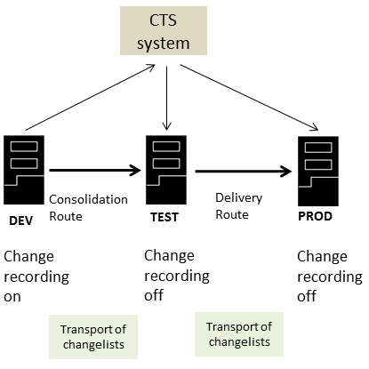

CTS and Changelists
If you use CTS transport, you can set up your transport track in such a way that object changes are made in the development system only and that changes are transported in changelists to the follow-on systems in your transport track.
When you configure your transport track, you must keep the following points in mind:
-
Enabling of change recording
Change recording is enabled in the development system and it is disabled in all follow-on systems.
-
Configuration of transport routes in CTS
You define a consolidation route between the development and the test system and a delivery route between the test and the production system.
-
Transport Mode
To add the changelists to a transport request, you choose
 CTS EXPORT
CTS EXPORT  Released changelists
Released changelists  on the development system in SAP HANA Application Lifecycle Management.
on the development system in SAP HANA Application Lifecycle Management. -
Configuration of non-ABAP systems in CTS
The development system is configured as source system in CTS, and all other systems are configured as target systems.